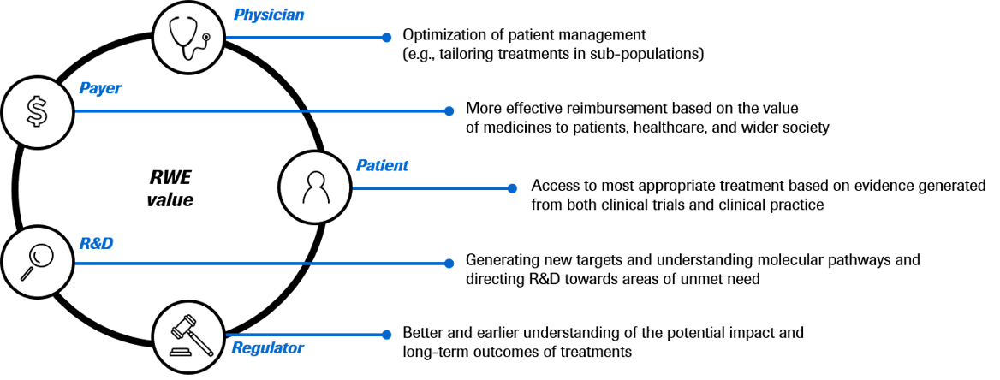

REAL-WORLD DATA (RWD)

Description
Real-World Data (RWD) is defined as data relating to patient health routinely collected from a variety of sources outside of traditional controlled clinical interventional trials, under real-life clinical practice.
The evidence derived from the analysis and/or synthesis of RWD is called Real-World Evidence (RWE).
RWD can be collected from various sources such as electronic/medical health records, Digital Health solutions, pharmacy claims, insurance claims, disease and product registries, diagnostics/omics databases, hospitals/outpatient visits, health surveys and patient-reported outcomes (PROs), non-investigational studies, social media, etc.
Why it is important for PHC
Bridge evidence gaps of randomized control trials (RCTs)- The discovery of smaller and smaller patient sub-populations (e.g., rare cancer-driving genomic alterations) is making it unfeasible to run RCTs. Supplementary data sources, such as RWD, are needed to understand patient characteristics and treatment effectiveness. The heterogeneity of patient populations means that RCT data have low generalizability. This also leads to evidence gaps in treatments and patient outcomes in the real-world setting. However, RWD provides a much larger and more heterogeneous patient pool. RCTs are costly and time-consuming as compared to RWD.
Smarter & more efficient R&D – Insights from RWD can provide learnings, such as treatment decisions in the real-world setting and molecularly-guided treatment options (MGTO). This can potentially fuel new research questions that can lead to smarter and more efficient R&D.
Benefits to Stakeholders
 RWD is a key component of our PHC vision and strategy because:What Roche is doing in this area
Roche’s RWD assets span sources including platforms, registries, and genomic databases.

Roche is using RWD to advance Research, Regulatory, Access, Medical and Commercial objectives. 5
Global use cases of RWD
Global/Regional
Local use cases of RWD in close collaboration with Global on e.g., messaging-strategy

Click button below to see:
Key considerations of using RWD
Where RWD Fit Within PHC
Considerations

Connections in the
PHC Systems Map
Global use cases of RWD
Global/Regional
Local use cases of RWD in close collaboration with Global on e.g., messaging-strategy
CONNECTIONS IN THE PHC SYSTEMS MAP

interconnections